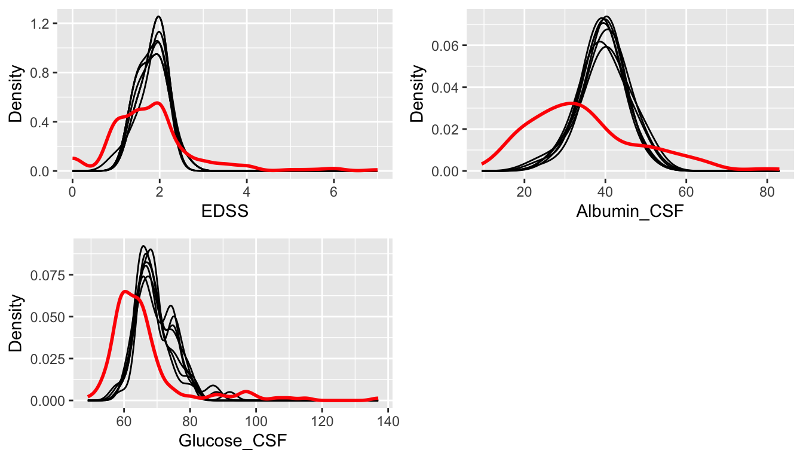
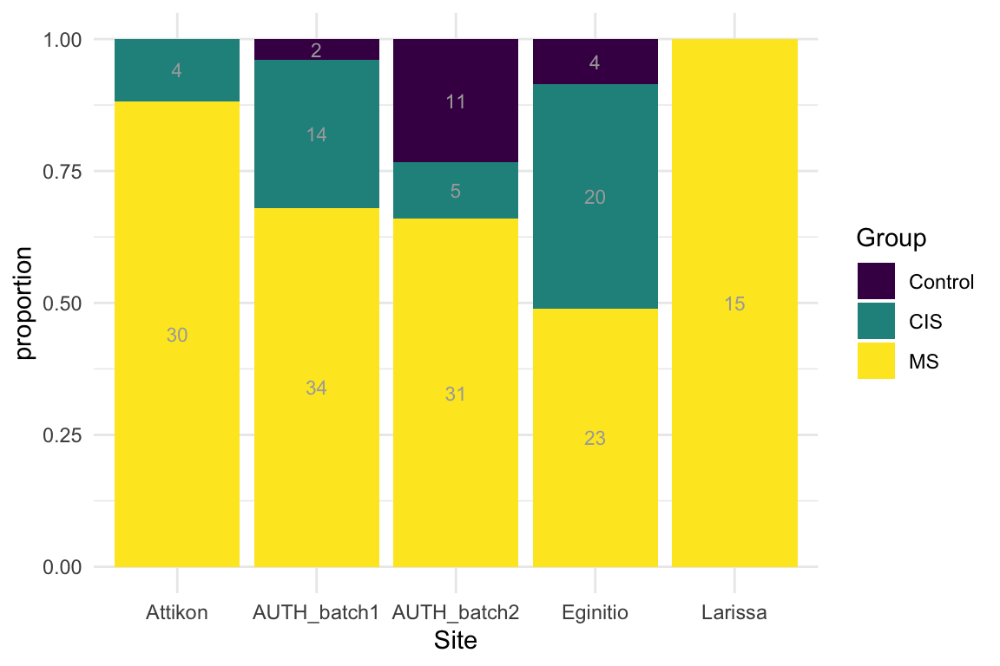
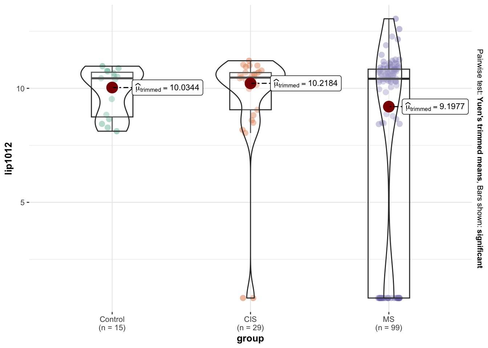
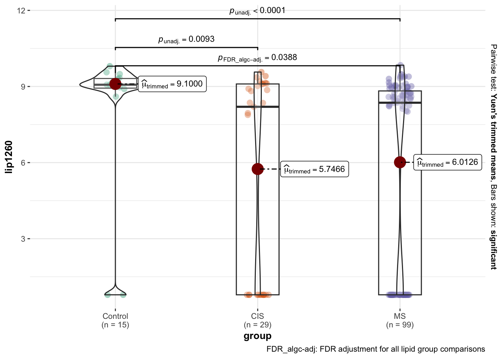
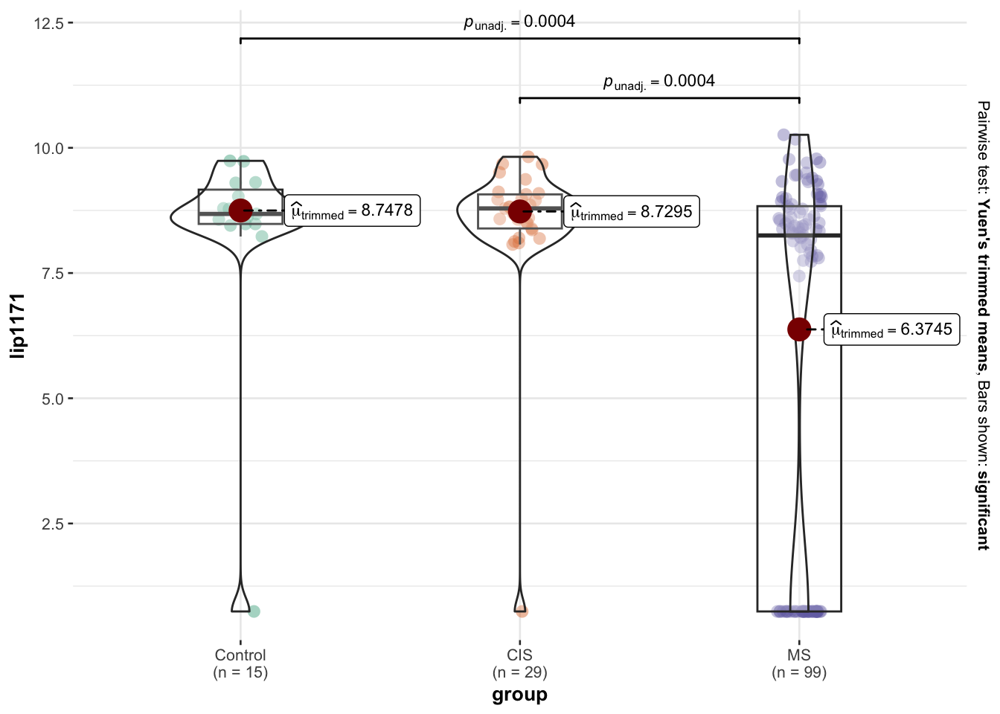

Data Description/Processing - MS Meta Data & Lipids
Data Summaries
metaData Descriptives
5 Continous Variables of 9 Variables, 193 Observations
Variable
Label
Units
n
Missing
Distinct
Info
Mean
pMedian
Gini |Δ|
Quantiles
.05 .10 .25 .50 .75 .90 .95
Run_Order
193
0
193
1.000
113.7
113.5
74.67
13.6 24.4 59.0 114.0 169.0 201.8 213.4 Age
193
0
46
0.999
35.45
35
12.47
20.0 23.0 27.0 33.0 43.0 50.0 54.4 EDSS
Expanded Disability Status Scale
179
14
12
0.951
1.81
1.75
1.053
0.00 1.00 1.00 1.50 2.00 3.00 3.55 Albumin_CSF
The level of CSF albumin is used as a reference to indicate increased permeability of the blood capillaries. CSF IgG is frequently elevated in multiple sclerosis, but normal levels do not rule out multiple sclerosis. Reference is 5-34 mg/dL
mg/dL
153
40
126
1.000
34.78
33.65
15.25
16.90 18.54 25.00 33.20 41.20 54.04 60.10 Glucose_CSF
Amount of sugar (glucose) in the cerebrospinal fluid (CSF). Reference is 50 to 80 mg/100 mL. Abnormal results include higher and lower glucose levels which may be due to nnflammation of the central nervous system
mg/100mL
153
40
40
0.997
66.06
63.5
11.03
55.0 57.0 59.0 63.0 67.0 75.8 96.0
metaData Descriptives
4 Categorical Variables of 9 Variables, 193 Observations
Variable
Label
n
Missing
Distinct
Bucket_Label
ID
193
0
193
003MS -
E113CONTROL
Min/Max/Mean Width: 3 / 11 / 5.9
Group
MS Disease Severity
193
0
3
Site
Data collection site
193
0
5
Gender
193
0
2
Lipid Concentrations View
Known Lipids
Notes & Quick Descriptives
Direct changes data import file: Boziki_serum_lipids_pos_rawexcel_metadata.xlsx
- Deleted rows having QC entries.
- Changed 1 case having Group value of aPMS to MS as per 1st column Bucket label.
- Changed 3 cases having Group value RIS to values as per 1st column Bucket label.
- Deleted the 2nd column Bucket label.
- Renamed metadata only columns for easier data manipulation and lipid reference.
- Removed Age=2 case with Group value equal to MS i.e. error: Bucket_Label is 26MS in Attikon
- Fixed a few other cells that were supposed to be blank and instead had some character.
- Missing values in clinical metadata are treated as randomly occurring during the data collection process. For the
EDSSindex, the missing values that correspond to theControlsare filled in with the zero value. However, as per team info,EDSSwas used to derive the target grouping for disease severity, hence it is not used in the analysis as a potential predictor. A fewControlscases have a non-zero value of 1 or 2 i.e. low index. These are cases that were initially grouped asCISbut then changed grouping toControlsby the medical team.
Changes after data are imported:
- To make disease severity group comparison fair and possible, 42 columns were removed from the data. These columns do not contain values in all 3 disease severity groups of Control, CIS and MS, and they are mostly lipid related, but also containing the following clinical metadata columns:
Brain_MRI_Lesions,Spinal_MRI_T2WandSpinal_MRI_Lesions. - Missing values in lipid concentrations correspond to non detected values which can naturally occur during LC/MS processing. These have been substituted with the value of 1 such that when the log transformation is applied they become zero to denote non-detection.
Multiple Imputation
The missing values as seen in the data summaries above have been multiply imputed using the random forest algorithm. All below data descriptions, statistical tests and graphics are based on the imputed data. The Modeling & Assessing Lipid Added Value page also utilizes the data after imputation.

MCAR.
Data Descriptions & EDA

Disease Severity Groups Vs Selected Lipids
Using the selected lipids from the Modeling section i.e. adjusted for clinical information, the univariate or non-adjusted differences amongst the MS disease severity groups are shown in the graphs below.
Note that p-values shown below are FDR adjusted at \(a = 0.2\) for all lipid group comparisons i.e. FDR_algc-adj, but not for any clinical data (see modeling page for this).
[[1]]
[[2]]
[[3]]
[[4]]
[[5]]
[[6]]
[[7]]
[[8]]